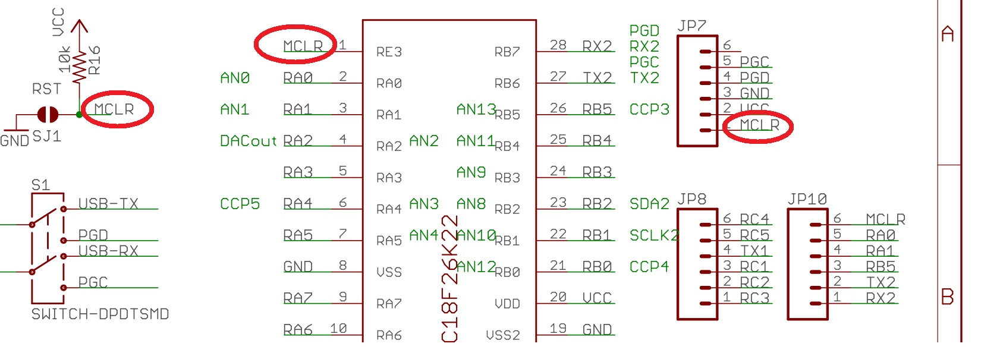
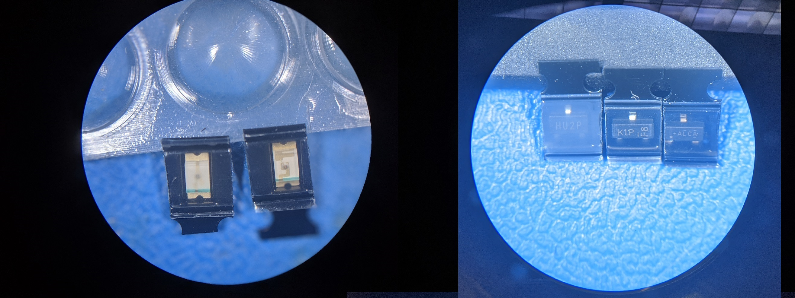
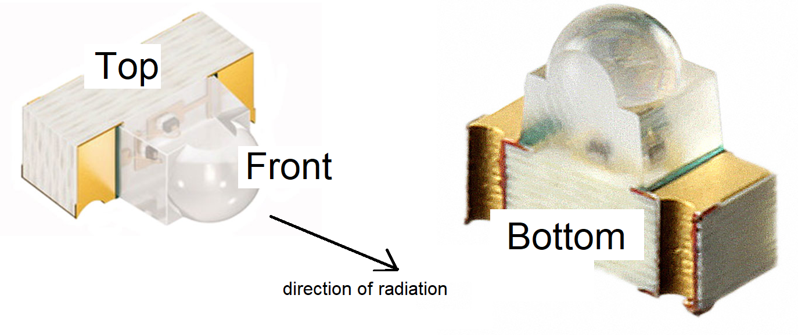
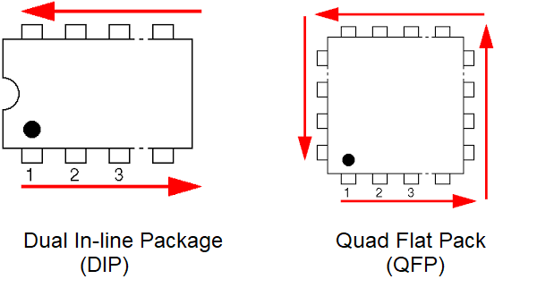
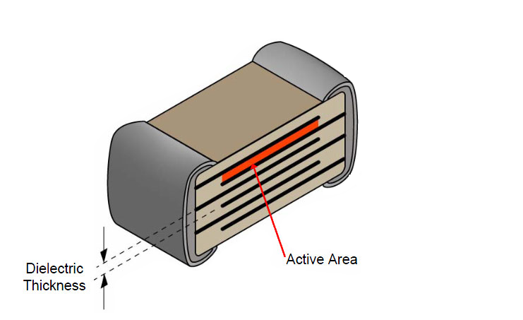
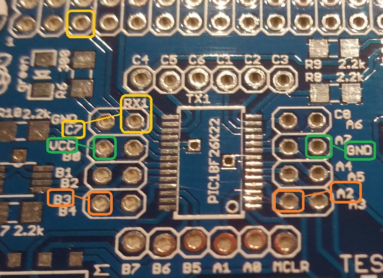
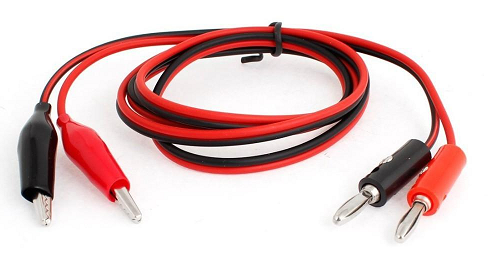
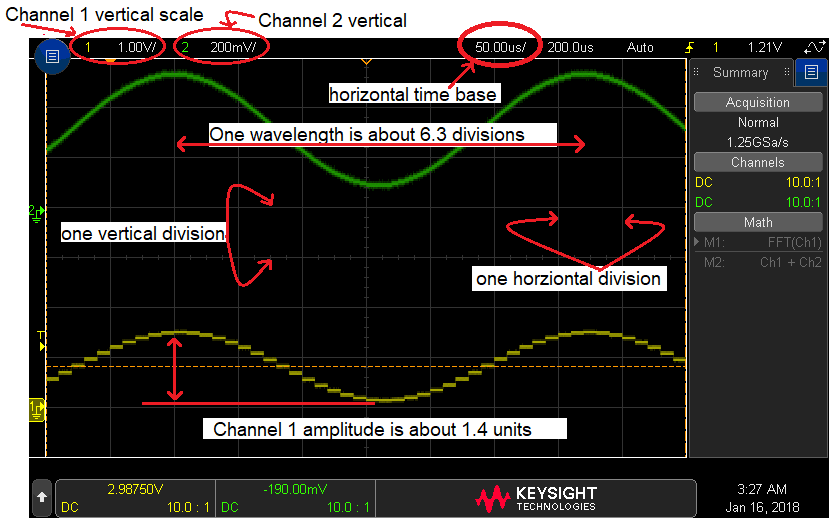
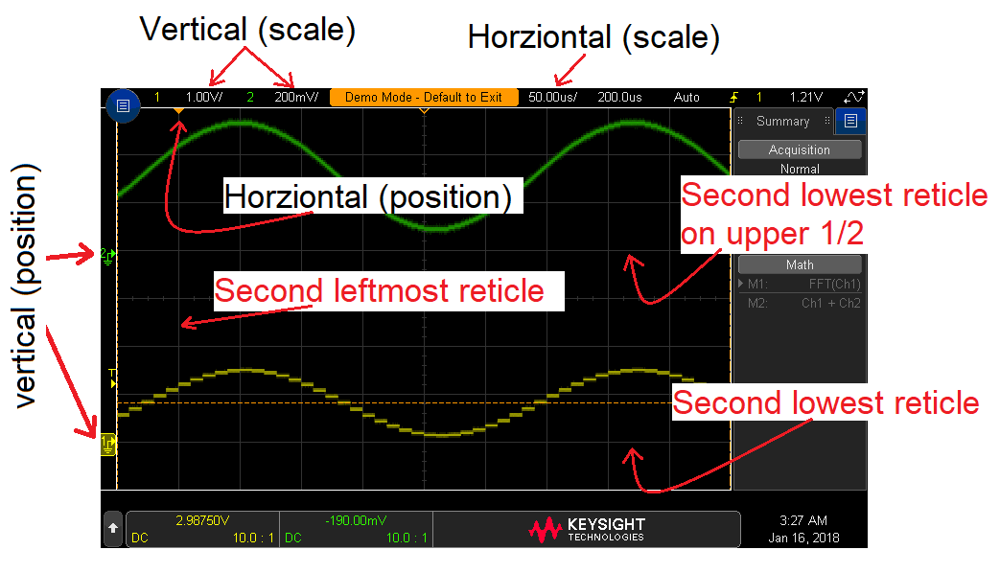

EENG 383
In Lab 1 - Development Board Build-upRequirements
Working in teams of two, read through the following lab activity and perform all the actions prescribed. You do not need to document bullet items. Make a record of your response to numbered items and turn them in a single copy as your teams "inLab" assignment on Canvas using the instructions posted there.Include the names of both team members at the top of your solutions. Use complete English sentences when answering questions. If the answer to a question is a table or other piece of art (like an oscilloscope trace or a figure), then include a sentence explaining the piece of art. Only include your answers, do not include the question-text unless it is absolutely needed.
Objective
The objective of this lab is to familiarize you with the structure and organization of the development printed circuit board (PCB) and the components so that you can successfully assemble your development board and if you encounter problems be equipped to deal with them on your own.PCB structure
Once the schematic is complete it's time to layout the physical board, the printed circuit board (PCB). The PCB structure is illustrated in the following diagram. Each of the numbers in the diagram is explained in the numbered text which follows.
Note, the following are not question numbers, but identifiers to the figure above.
- Fiberglass substrate (FR4) - If you look at the PCB edge-on you will see a tan colored plate of material that composes the majority of the PCBs volume. Our PCBs are made from most common substrate called FR4. The "FR" in FR4 stands for Flame Retardant meaning that this material self-extinguishes once a flame is removed.
- Trace - The fiberglass substrate of our PCB is laminated with a layer of copper on the top and bottom sides. The thickness of this copper is stated in terms of weight (in ounces) per square foot. Our boards are fabricated with 1 ounce copper which results in a copper thickness of 34µm. During the manufacture of the PCB, copper on both sides is selectively etched away to form the pattern on copper that you see. A trace is a thin strip of copper that forms a wire connecting two or more terminals. Laying out the traces on a PCB is the most time consuming task when designing a PCB. In the Dev'21 Board Layout traces on the top of the board are red and traces on the bottom of the board are blue.
- Plated through-hole - There are a variety of reasons that we need to put holes in a PCB. For example, you might need to mount a through-hole component, or cross a pair of traces without electrically connecting them. When holes are put into a PCB we most often plate the sides of the hole with a conductive material so that an electrical signal can pass from the bottom of the hole to the top. If you look carefully at the hole in your PCB you will see that they are shiny.
- SMT pad or SMT land - In order to attach a surface mount component to the PCB, part of the solder mask is removed from each contact point between the component and the PCB. Each of the exposed copper areas is coated with solder producing a shiny silver surface called a pad or land. The set of exposed pads associated with a component is called the component's footprint on the PCB.
- Solder mask - The solder mask is the green (or blue) coating over the majority of the PCBs surface. It performs three useful functions; it provides a modest level of electrical insulation for the copper it covers, it protects the copper from oxidation, and it helps prevent solder from sticking to areas you do not want soldered.
- Top copper pour - Only a fraction of the top layer is covered in traces. The unused copper on the top layer is often put to use by a PCB design by having it carry a power voltage, in our case 3.3v. Consequently, anytime a device needs power, it will connect to excess copper in the top layer. The term "pour" is used to conjure the idea that the copper is poured onto the PCB in a liquid state, flowing to all available regions not occupied by some PCB feature.
- Bottom copper pour - The unused region of the bottom side of the PCB is almost always connected to the ground. This is most frequently called the "ground plane". Since many components need to be connected to ground, there are a lot of holes through the board that connect to the ground plane.
- Silk screen - the silk screen is the white text on the PCB. Generally the silk screen tells you where you to place a component and the components value. The part identifiers on the PCB should exactly match the part identifiers on the schematic.
Development Board Schematic
The development of a circuit board start with a schematic which is a logical representation of the circuit to be constructed. Logical in the sense that a schematic does not capture the shape of physical interconnections of the circuit elements. Wires that are given the same name on a schematic are assumed to be connected. The Development Board Schematic is quite complex and shows the interconnection of all the elements that make up our development board. In this lab you will learn about these parts, how they are interconnected, and where they are placed on the board. For your continued reference throughout the term, you should print a copy of the development board schematic.- Each device on a schematic has a unique part identifier consisting
of a letter and number. The letter designates the type of component
and the number provides a unique reference for the part. Since there is
no recognized standardization of these parts identifier letters, you
need to be flexible in your interpretation. Use
this web page and our schematic to
complete the following table.
Device Part identifier letter Resistor Capacitor Integrated circuit LED Jumper JP Mounting hole MH Fuse F
The green lines in our development board schematic
represent the actual physical wires on the printed circuit board.
If, while drawing a schematic, an engineer needs a signal to go to
more than one destination, they will add a junction connector (green dot)
on the schematic at the point where the wire carrying that signal splits.
This helps to
visually reinforce that the wires at that junction are connected together. On
the other hand an engineer may need two wires on the schematic to cross one
another without connecting to one another. In this case the
engineer will not place a junction connector (green dot) at the point
where the wires cross. These two situations are called out in the figure
below.
- For each pin of the MCU list the parts identifier of any device that
connects to that pin - don't list the MCU as a device. Every pin connects
to at least one component. If a pin connects to more than one component,
list the parts identifiers for all the parts.
Pin Part Identifier RA0 JP12 RA1 RA2 TOP (button), R19, JP8 RA3 RA4 RA5 IC1P, R9, C13, JP8 RA6 RA7 RB0 RB1 RB2 RB3 RB4 RB5 RB6/PGC JP11, JP12, J1 RB7/PGD JP11, JP12, J1 RC0 RC1 RC2 RC3 RC4 RC5 RC6/TX1_PIC JP10, S1 RC7/RX1_PIC JP9, S1 RE3/MCLR - Completing the schematic is not just a matter of placing and connecting
symbols together. One of the most time consuming aspects of PCB design
is selecting components. I use Digikey
as my primary parts vendor. To illustrate the complexity of this process
we'll examine the process of selecting the 10uF ceramic capacitor.
Open the Digikey web page and start by Entering "Capacitors" (without
the quotes) in the Part Number/Keyword search box. Click on the Blue
"Ceramic Capacitors (xxxxx items)" link on the results page.
- How many "Ceramic Capacitors" are available for you to choose from?
- Click on the "In stock" check box (just above the grey "Clear All Selections" button) and then click the red Apply Filters button. How many Ceramic Capacitors are in stock?
- You now need to work with the series of boxes containing capacitor parameters - these are called the DigiKey selectors. On the far right choose 1206 (3216 Metric) for the Package/Case and then click "Apply filter". How many Ceramic Capacitors are left to choose from?
- Select 10uF for the Capacitance. How many Ceramic Capacitors are left to choose from?
- Select "Cut Tape" for the Packaging. This just means that we are purchasing low volume quantities (we do not want a reel of 5,000 devices. How many Ceramic Capacitors are left to choose from?
- Compare the cost of the cheapest capacitor against that used on our board. You can sort the list of parts according to increasing cost by clicking the upward pointing triangle,▲, below the "Unit Price" column header. You can find the part number of our 10uF ceramic capacitor in the the Bill of Materials for our board. What is the unit cost for the cheapest in-stock 10uF ceramic 1206 capacitor and what is the unit cost for the 10uF capacitor on our development board?
- When deciding on a component, I often sort the list of candidate parts by "Quantity Available" under the assumption that DigiKey carries more inventory of popular, high demand parts. What is the cost of the most popular 10uF ceramic capacitor?

Wires in a schematic may be labeled with a name that should tell you about the signal's purpose or origin. For reasons of improved readability, the middle of a wire may be "cut out" leaving only the ends. In such cases, the ends of the wire must be labeled with the same name. For example, the signal MCLR is connected to three different components in the figure below. On the physical PCB, these three locations are wired together.

You may notice a fair amount of green text on our schematic like "CCP5" and "DACout" in the figure above. This text serves to document the design and does not serve any functional role. Engineering change orders (ECO) are future improvements that should be made to the PCB and are given their own text box on the schematic so they are not forgotten when revising the board.
Telling parts apart
Some of the parts that you will be putting on the development board PCB have identical part packages with few distinguishing marks to guide you to which part is which. For example:- The red and green LEDs (left side of figure below) come in 2-terminal packages with clear lenes,
- The Hall effect sensor, 2N2222 BJT, and linear regulator (right side of the figure below) come in SOT-23 package.

The only distinguishing mark on the SOT23 devices is the text laser engraved on the surface of the chip - called the device markings. In order to tell which SOT23 part is which you will need to consult the technical documents for each parts. Let's walk through this together in detail for each of the parts so that you can better understand how different manufactures describe thsir device marking. This is a very important piece of knowledge because you must put each of these three parts in their correct location when assembling your development board.
Let's start with the 2N2222.
- Open the bill of materials (BOM) for the development board,
- Find the "Digi-Key Part Number" for the "2N2222 NPN". Note, Digikey part numbers always end in "-ND",
- Google this part number,
- The top result is the product overview page for the 2N2222 NPN on the Digikey web site,
- Locate and open the "Datasheets" link for this 2N2222 NPN,
- Look through the pdf datasheet for the section titled "Marking Information". The SOT23 picture has the marking code and date information,
- Compare the codes on the SOT23 chips against the image above to determine which chip is the 2N2222.
Next, let's find the device markings for the Hall effect sensor,
- Open the bill of materials (BOM) for the development board,
- Write down the manufacture part number for the Hall Effect,
- Find the "Digi-Key Part Number" for the "Hall Effect",
- Google this part number,
- Look for a search result that links to digikey.com,
- Locate and open the "Datasheets" link for this Hall effect sensor,
- Look through the pdf datasheet for the section titled "Packaging Information",
- Find the row corresponding to our part's manufacture part number,
- Look in the "Device Marking" column,
- Read note (5) at the bottom of Addendum-Page 2 to better understand,
- Compare the codes on the SOT23 chips against the image above to determine which chip is the Hall Effect sensor.
Finally let's determine the device markings for the linear voltage regulator.
- Open the bill of materials (BOM) for the development board,
- Write down the manufacture part number for the "Linear Voltage Regulator..."
- Find the "Digi-Key Part Number" for the "Linear Voltage Regulator..."
- Google this part number,
- Look for a search result that links to digikey.com,
- Locate and open the "Datasheets" link for the MCP1703,
- Look through the pdf datasheet for the section titled "Product Identification System",
- Use the manufacture part number to determine the Output Voltage,
- Continue looking through the pdf datasheet for the section titled "Packaging Marking Information",
- Find the table associated with the "3-pin SOT23A" package,
- Use the Output Voltage to find the symbol associated with the Voltage* of our part,
- Compare the codes on the SOT23 chips against the image above to determine which chip is the Linear Voltage Regulator.
The LED situation is not as clear as the technical documents do not show the die layout for red and green LEDs. There are two methods that you could use to determine which LED is which. The first (what I did) was to use a digital multimeter in diode checking mode (see instructions below) to illuminate the LED and have them reveal their true color. The second is to note the internal organization of the conductive traces inside the LED. As shown in the image below, the conductive traces inside the green LED is more serpentine than the red LED.

Parts orientation on PCB
When you place components on the development board you need to know if the orientation of the component is important. For electrical components with two terminals, this distinction is declared by calling the part polarized (orientation matters) or non-polarized. All the resistors and ceramic capacitors on our development board are non-polarized. Each of these devices has its part designator and value printed nearby on the silk screen. For example, in the RED LED image above, resistor R15 has a value of 2.2kΩ and is placed directly below the text. I've worked hard to make sure that the placement of the text and the associated part is unambiguous.Polarized parts introduce an additional layer of complexity, not only do you have to put the part in the correct place, but you also have to place the part in the correct orientation. Light emitting diodes (LEDs) are polarized so merit further discussion.
An LED has an anode and a cathode, current can only flow from the anode to the cathode. The electrical symbol for an LED is shown below along with the image of a non-light emitting diode. Since the two ends of the diode look identical, manufactures of diodes paint a white line on the cathode end of the diode. The ideas is that the white line on the diode package looks similar to the vertical line on the cathode-end of the diode's schematic symbol.

Now let's examine how the orientation of your surface mount LEDs are denoted by the manufactures.
-
Look-up the DigiKey-key part number for the
green and red LEDs in the BOM and open their associated PDF Datasheet.
Note that the RED LED is listed as "RED SM" where "SM" stands for
"Surface Mount".
- Using the diagram on the second page, which end of the LED (anode or cathode) is the green stripe on? Note the green stripe is indicated by the shaded area (exclusive of the soldering terminals). If you cannot tesll from the diagram, look directly at the LED on the development board.
- Using the development board schematic and layout images linked above, which end of the LED does the white silk screened triangle point towards?
-
Use
this link to access the data sheet for the IR LED.
- Using the diagram on page 7, which end of the LED (anode or cathode) is the black stripe on? Note the black stripe is indicated by the hatched area (exclusive of the soldering terminals on the rear view).
- Using the development board schematic and layout, which end of the LED does the triangle point towards?

When an electrical part has more than two terminals, the orientation of the part almost always matters. For example, all the integrated circuits (IC) on our development board have 3 of more terminals. When talking about an IC, the terminals are called pins because they are shaped more or less like sewing pins and often have sharp ends.
If the pins on ICs are arranged non-symmetrically, as shown in the image below, the placement of the IC on the PCB is non-ambiguous. The IC can only be placed on the PCB in one orientation.

On the other hand, if the pins of the IC are arranged symmetrically, then the orientation of the IC is ambiguous without additional information. The pins on an IC are typically numbered starting at 1. In IC packages with two sets of pins along the sides, pins numbers increment down one side and then back up the other. In IC packages with four sets of pins, the pins numbers increment counter clockwise as shown in the figure below.

There are a variety of methods used to indicate pin 1 on a PCB. Our development board will use several of them because the footprints came from several different sources. Examples include an asterisk marking at pin 1, a half-moon at the "top" of the chip (like the cut-out in the DIP image above), and white dot next to pin 1.
Likewise, there are a variety of methods used to indicate pin 1 on an IC. An indented dimple molded into the IC package is placed adjacent to pin 1. Some ICs will have a laser etched dot next to pin 1. Some ICs will have half-moon molded into the end of the IC which has pin 1.
The RGB LED is a part that is easy to install incorrectly. Open the BOM and locate the Digikey part number for the RGB LED. Go to the Digikey web page and open the Datasheet for the RGB LED. Use the RGB LED datasheet to determine and describe how pin 1 is marked on the RGB LED. On the RGB LED footprint on the PCB ("E" in the image below) the silkscreen "A" means anode and "C" means cathode.
- Use the image below and the image of the completed PCB at the end
of the testing instructions to complete the following table.
- In the IC or LED column put the component designator silk- screened on the PCB in the image below.
- In the "Pin 1 (or cathode) location, put the orientation of the location of pin 1 on the PCB shown in the image below. For LEDs, let the cathode be pin 1.
- In the "Pin 1 designation" column, use the images at the end of this inlab to determine if pin 1 on the IC package is denoted by a dimple in the IC package or white dot etched onto the surface IC - write "dimple" or "dot" as your answer. For the LEDs indicate the stripe color that denotes the cathode.
Letter IC or LED Pin 1 (or cathode) location Pin 1 designation A RGB LED Notch B C Dimple D Lower-left corner 1 2 Red LED 3 
-
In an earlier question you were asked to determine the device markings
for each of the SOT23 devices. In the table below, in the "Silk Screen"
column, list the white text inside the purple rectangle on the PCB image
above. In the "Device Marking" column list the laser etched device
markings for the SOT23 device that belongs in that rectangle. You
should have this information written down from your previous work.
Letter Silk Screen Device Markings X Y Z - SMT resistors use a
numbering
code for their values. Read about this code (look in the "SMT resistors"
section). This question asks you to figure out where to put the resistors on
the development board. This will be done by completing the following table.
The "Code" column contains the code printed on the resistor package.
The "Resistance" column contains the numerical resistance.
The "Part Designator" column contains the reference values for each of the
resistors of that row's value on the PCB. For example, in the PCB image
above, the 1MΩ resistor above the microphone has part designator
"R9". In the "Number on PCB" column, count the number of resistors with that
rows value that appear on the PCB.
You may find it help to consult the BOM (linked above), the image of the PCB (above) and this picture of the development board parts.Code Resistance (in ohms) Part Designator Number on PCB 1002 390 2201 2.2kΩ R16,R15,R3 3 301 2R2 910Ω 105 101 - The SMT capacitors used on our development board do not have a nifty
codes printed on them. Howver, they do have two physical attributes that can
help you determine relative capactiance of a miscillanous assortment:
the darker the color of the capacitor the higher the capactiance and
thicker capacitors have higher capatiance. This second attribute is a
result of the manufacturing process used to make multilayer chip capacitors
(MLCC). As shown in the image below, MLCCs are manfactures by stacking
alternate conductive layers between a dielectric materials and connecting
half the layers to one end of the capacitors and the remaining layers to
the other end.

You can use a DMM to determine the capacitance, but beware, its hard to hold small capacitors between the probe ends without the capacitor squirming away. Use the Bill of Materials linked above, the image of the PCB (given above) and the picture of the development board parts, linked above, to complete the following table. Make sure to order the parts designator from smallest number to largest number.Capacitor Parts Designator Number on PCB C2, C4, C13 0.1uF 3 10uF C1,…
{kind=link}
PCB silk screen
Earlier in this lab you learned that the silk screen is the white text printed on the surface of the PCB. I placed this text on the PCB to help you assemble and use the board. Take a moment to look at the board shown in the image below (note, this is an older revision the the board so will have some difference to your board. In particular, let's look at the holes around the PIC18F25K22.
Focus your attention on the 8 holes on the left side of the PIC. Each pair of holes in a row is associated with the two text labels immediately to the left. For example, the holes in the bottom row are associated with pins "B3" and "B4" of the PIC. Since the "B3" text is to the left of "B4", the lower left hole is associated with pin B3 of the PIC and the lower right hole is associated with B4. A few other examples are illustrated. Note that VCC and GND are associated with the entire PCB, but are also connected to the PIC - you would need to know their location during the assembly procedure. If you look carefully at the image you should be able to see the signal trace between the hole and the PIC footprint under the soldermask.
Finally, the upper right hole on the left side of the PIC is C7. The PIC also use pin C7 as a receiver for the USART #1 "RX1". This may be important when you are working on your final project.
Digital multimeter
Even through you are not assembling the development board, you will need to use a digital multimeter (DMM) to check the electrical properties of components. Specifically, you will need to:- Check the resistance between Vcc and GND,
- Check the voltage of Vcc, and
- Check the color of an LED.

|  |
- Measure Resistance
- Plug the banana test cables into the red and black jacks of the DMM (labeled "A"),
- Press the Ω button (labeled "C"),
- Connect the ends of the test cables across the terminals of the device you want to measure the resistance of,
- The resistance will be displayed.
- Measure Voltage
- Plug the banana test cables into the red and black jacks of the DMM (labeled "A"),
- Press the DC V button (labeled "B"),
- Connect the ends of the test cables across the terminals of the device you want to measure the voltage of,
- The voltage will be displayed.
- Color check LED
- Plug the banana test cables into the red and black jacks of the DMM (labeled "A"),
- Press the diode button (labeled "D"),
- Connect the anode of the LED to the red cable (which should be attached to the red jack on the DMM labeled "VΩHz"). Connect the cathode of the LED to the back cable (which should be attached to the black jack of the DMM labeled "COM"),
- The LED should emit be dimly illuminated,
- The forward voltage drop will be displayed.
Oscilloscope
In this lab you will need to work with the oscilloscope in order to observe some electrical signals generated by your development board. An oscilloscope is a device for visualizing voltage signals through time; the vertical axis is voltage and the horizontal axis time. Our lab is equipped with 2-channel oscilloscopes, meaning that they can observe 2 separate electrical signals at the same time (this is a very helpful capability to have). You should associate channel 1 with the color yellow on the front panel of the oscilloscope and on the oscilloscope display. Likewise, channel 2 is associated with the color green.The large area on the oscilloscope screen is divided by a series of lines (called reticule) forming a grid with 10 horizontal division and 8 vertical divisions. Power-up the oscilloscope at your work station by pressing the white button on the lower left corner of the oscilloscope. The scope will take a while to power-up, when it does take a moment to verify the number of horizontal and vertical division on the scope face. Note that you may need to press the back button, just above the power-on button, to clear the menu's off the scope screen).
The size of the grid displayed on the oscilloscope does not change, but the meaning of the grid can. By changing the position of the vertical scale knob, you can change the number of volts per vertical division. This is used to tell how many volts the input signal is changing. For example, in the figure below, find the red circle surrounding "Channel 1 vertical scale", it's labeled "1.00V/", this means that each time the input signal changes by 1 vertical division, the input signal has changed by 1 division * 1 volt/division = 1 volt. Since the amplitude of the channel 1 signal (channel 1 is always drawn in yellow) is 1.4 division, then the input signal applied to the channel 1 probe has an amplitude of 1.4v.

Likewise, the horizontal scale (or time base) is set by the horizontal scale knob. Look for the horizontal time base in the figure above, "50.00us/". Note that the slash should be interpreted as "per division". Hence, each time the input signal travels 1 horizontal division, 50us has gone by. You can use the horizontal scale to determine the period of a waveform. For example, the period of the channel 2 waveform is 6.3 divisions * 50us/division = 315us. Since the reciprocal of period is frequency, this waveform has a frequency of about 3.2kHz.
Now let's turn to all those knobs and buttons on the front of the oscilloscope and try to figure out what they do. To start, you will be provided with a 3x5 Oscilloscope cheat-sheet to use as a reference. The card shows that the oscilloscope face has hard keys, soft keys and knobs.
Hard keys are buttons that have names stenciled on them. For example "Trigger". When I reference a hard key on the cheat-sheet I will surround its name with square brackets, e.g. [Trigger]. Soft keys are context dependent set of 6 buttons located just below the oscilloscopes screen. These options change depending on which hard key was just pressed. For example, the cheat sheet shows the soft key options that appear when the [Trigger] button is pressed. When instructed to press a soft key on the cheat sheet, the key label will be underlined. For example, press [Trigger] → Slope → ↑. Knobs are rotating device that allow you to make a selection. Each knob has a name and when referenced on the cheat sheet its name is surrounded with parenthesis. The knob to the right of the [Trigger] hard key is called "level" and I might ask you to adjust the (Level) in the cheat sheet. You can press most of the knobs which frequently allows you to lock-in the selection that you have made.
The channels are numbered "1" and "2" with channel 1 being color-coded yellow and channel 2 green. On the cheat-sheet and the physical oscilloscope locate the channel 1 Scale and Position knobs. The scale knob is larger of the two and controls how "zoomed-in" to the signal. The position knob moves the channel 1 signal up and down without changing its scale. The channel hard key is located between the scale and position knobs and allows you to hide and present channel 1 on oscilloscope screen. When the channel is being displayed the 1 hard key is illuminated. Even though the oscilloscope may be trying to display the signal, you may have the oscilloscope configured so that the signal cannot be seen.
Let's get started. Go to one of the cable racks and grab a pair of oscilloscope probes. I like to use the official Keysight probes like the one shown below when I have a choice.

The probe connects to the oscilloscope using a BNC connector like the one shown below. In order to mate the two you should grab the BNC connector by the knurled ring and insert it onto the receiving connector of the oscilloscope (located at the bottom right of the oscilloscope). Continue pressing the BNC connector into the scope while giving a quarter turn twist clockwise. You should feel the BNC connector click into place when you get it right. Sometimes it takes a try or two to get it right, you have to press firmly to get the needed amount of pressure. When removing the oscilloscope probe you may find it helpful to apply some pressure (like you were trying to press the BNC connector onto the scope), while twisting counter-clockwise.

After you connect both BNC connectors to the oscilloscope, you will connect the probe ends to a signal source. In our case, this will be coming from the oscilloscope itself. You will then setup the oscilloscope to examine these waveforms using the following steps.
- Have the oscilloscope generate a test signal.
[Help] → Training Signals → Training Signals Use the (Select) knob to select "Analog & Digital Signals" and center press the (Select) knob to lock-in this selection, - Connect proper oscilloscope probes to channel 1 and 2 of the oscilloscope,
- Connect one of the probe ground clip of the oscilloscope probes to the "Probe Comp" connector on the oscilloscope. The probe ground clip is an alligator clip and the Probe Comp connection is the center connector in the area labeled "Test signal" on the cheat-sheet). You do not need to connect both ground clips because the group clips are electrically connected to one another. For this reason it's good practice to attached the unused ground clip to itself as shown in the figure below. The reason that I do this is so that the unused ground clip does not accidentally come into contact with a non-ground signal, creating a short circuit (been there, done that),
- Connect the oscilloscope channel 1 probe to the Demo 1 connector on the front face of the oscilloscope. This connector is to the right of the Probe Comp connector,
- Connect the oscilloscope channel 2 probe to the Demo 2 connector on the front face of the oscilloscope. This connector is to the left of the Probe Comp connector,
- Set the vertical scale for channel 1
Ch1 (scale) → 1v/ - Set the vertical scale for channel 2
Ch2 (scale) → 0.2v/ - Set the vertical position for channel 1
Ch1 (position) → second lowest reticule on the lower half screen, - Set the vertical position for channel 2
Ch1 (position) → second lowest reticule on the upper half screen, - Set the horizontal scale
Horizontal (scale) → 50us - Set the horizontal position
Horizontal (position) → second leftmost reticule, - Set trigger mode to auto
[Mode/Coupling] → Mode → Auto - Set trigger source to channel 1
[Trigger] → Source → 1 - Set trigger slope to positive edge
[Trigger] → Slope → ↑ - Set the trigger level
(Trigger level) → 1/2 way between min and max (0.7v) - Clear all menus off the bottom of the screen
↑ Back

|  |
| Ch1 probe | Demo 1 |
| Ch2 probe | Demo 2 |
| Ch1 ground clip | Probe comp |
| Horizontal (scale) | 50 us |
| Ch1 (scale) | 1V |
| Ch2 (scale) | 0.2V |
| Trigger mode | Auto |
| Trigger source | 1 |
| Trigger slope | ↑ |
| Trigger (level) | 1.2V |
- Whenever you have two signals on the oscilloscope screen at the same time that they do not overlap, by aligning them with the second lowest reticules on their respective halves of the screen,
- Align the horizontal position at the second left-most reticule,
- Adjust the horizontal scale so that you capture between 1 and 2 wavelengths of the waveform being examined,
- Cell-phone pictures of your oscilloscope screen will not be accepted, please invest in a thumb drive, or borrow one.
Now let's look a little more close at that signals that you have captures on your oscilloscope. Use the "Measure" section on the back of the cheat-sheet to put the frequency and peak-to-peak voltage of the channel 2 signal. Then use the "Save to USB" instructions and capture a screen shot of the screen with the measurements in the right window as your answer to this question.
- Include the file saved on the USB drive as the solution to this question.
Syllabus
These questions will require you to look for information on our syllabus or on the class web page.-
- What is the point range for a C+ in the course?
- When are Dr. Coulston his office hours?
- When is Exam 2 being given?
- When and where does your lab section TA hold his/her office hours?